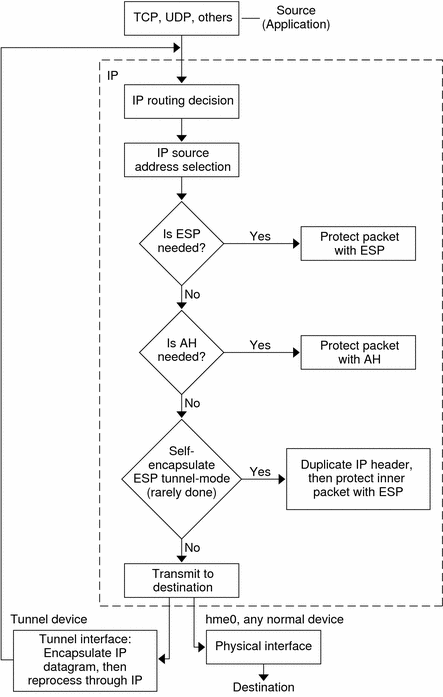
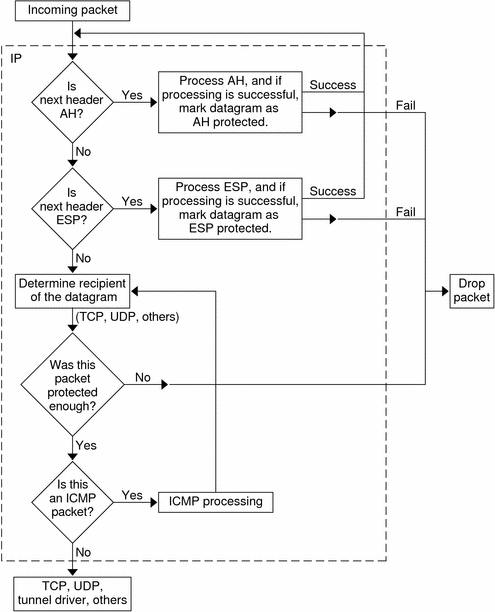

Previous
Previous
IPsec RFCs
The Internet Engineering Task Force (IETF) has published a number of Requests for Comment (RFCs) that describe the security architecture for the IP layer. All RFCs are copyrighted by the Internet Society. For a link to the RFCs, see http://ietf.org/. The following list of RFCs covers the more general IP security references:
RFC 2411, "IP Security Document Roadmap," November 1998
RFC 2401, "Security Architecture for the Internet Protocol," November 1998
RFC 2402, "IP Authentication Header," November 1998
RFC 2406, "IP Encapsulating Security Payload (ESP)," November 1998
RFC 2408, "Internet Security Association and Key Management Protocol (ISAKMP)," November 1998
RFC 2407, "The Internet IP Security Domain of Interpretation for ISAKMP," November 1998
RFC 2409, "The Internet Key Exchange (IKE)," November 1998
RFC 3554, "On the Use of Stream Control Transmission Protocol (SCTP) with IPsec," July 2003 [ not implemented in the Solaris 10 release ]
IPsec Terminology
The IPsec RFCs define a number of terms that are useful to recognize when implementing IPsec on your systems. The following table lists IPsec terms, provides their commonly used acronyms, and defines each term. For a list of terminology used in key negotiation, see Table 22-1.
Table 19-1 IPsec Terms, Acronyms, and Uses
IPsec Term | Acronym | Definition |
|---|---|---|
Security association | SA | A unique connection between two nodes on a network. The connection is defined by a triplet: a security protocol, a security parameter index, and an IP destination. The IP destination can be an IP address or a socket. |
Security associations database | SADB | Database that contains all active security associations. |
Security parameter index | SPI | The indexing value for a security association. An SPI is a 32-bit value that distinguishes among SAs that have the same IP destination and security protocol. |
SPD | Database that determines if outbound packets and inbound packets have the specified level of protection. | |
Key exchange |
| The process of generating keys for asymmetric cryptographic algorithms. The two main methods are RSA protocols and the Diffie-Hellman protocol. |
Diffie-Hellman protocol | DH | A key exchange protocol that involves key generation and key authentication. Often called authenticated key exchange. |
RSA protocol | RSA | A key exchange protocol that involves key generation and key distribution. The protocol is named for its three creators, Rivest, Shamir, and Adleman. |
Internet Security Association and Key Management Protocol | ISAKMP | The common framework for establishing the format of SA attributes, and for negotiating, modifying, and deleting SAs. ISAKMP is the IETF standard for handling IPsec SAs. |
IPsec Packet Flow
Figure 19-1 shows how an IP addressed packet, as part of an IP datagram, proceeds when IPsec has been invoked on an outbound packet. The flow diagram illustrates where authentication header (AH) and encapsulating security payload (ESP) entities can be applied to the packet. How to apply these entities, as well as how to choose the algorithms, are described in subsequent sections.
Figure 19-2 shows the IPsec inbound process.
Figure 19-1 IPsec Applied to Outbound Packet Process
Figure 19-2 IPsec Applied to Inbound Packet Process
IPsec Security Associations
An IPsec security association (SA) specifies security properties that are recognized by communicating hosts. A single SA protects data in one direction. The protection is either to a single host or to a group (multicast) address. Because most communication is either peer-to-peer or client-server, two SAs must be present to secure traffic in both directions.
The following three elements uniquely identify an IPsec SA:
The security protocol (AH or ESP)
The destination IP address
The SPI, an arbitrary 32-bit value, is transmitted with an AH or ESP packet. The ipsecah(7P) and ipsecesp(7P) man pages explain the extent of protection that is provided by AH and ESP. An integrity checksum value is used to authenticate a packet. If the authentication fails, the packet is dropped.
Security associations are stored in a security associations database (SADB). A socket-based administration engine, the pf_key interface, enables privileged applications to manage the database.
For a more complete description of the IPsec SADB, see Security Associations Database for IPsec.
For more information about how to manage the SADB, see the pf_key(7P) man page.
Key Management in IPsec
Security associations (SAs) require material to create the keys for authentication and for encryption. The managing of this keying material is called key management. The Internet Key Exchange (IKE) protocol handles key management automatically. You can also manage keys manually with the ipseckey command.
SAs on IPv4 and IPv6 packets can use either method of key management. Unless you have an overriding reason to use manual key management, automatic key management is preferred. For example, to interoperate with systems other than Solaris systems might require manual key management.
The in.iked daemon provides automatic key management. For a description of IKE, see Chapter 22, Internet Key Exchange (Overview). For more information on the in.iked daemon, see the in.iked(1M) man page.
The ipseckey command provides manual key management. For a description of the command, see Utilities for Key Generation in IPsec. For a detailed description of the ipseckey command options, see the ipseckey(1M) man page.
IPsec Protection Mechanisms
IPsec provides two security protocols for protecting data:
Authentication Header (AH)
Encapsulating Security Payload (ESP)
An AH protects data with an authentication algorithm. An ESP protects data with an encryption algorithm. Optionally, an ESP protects data with an authentication algorithm. Each implementation of an algorithm is called a mechanism.
Authentication Header
The authentication header provides data authentication, strong integrity, and replay protection to IP datagrams. AH protects the greater part of the IP datagram. As the following illustration shows, AH is inserted between the IP header and the transport header.

The transport header can be TCP, UDP, SCTP, or ICMP. If a tunnel is being used, the transport header can be another IP header.